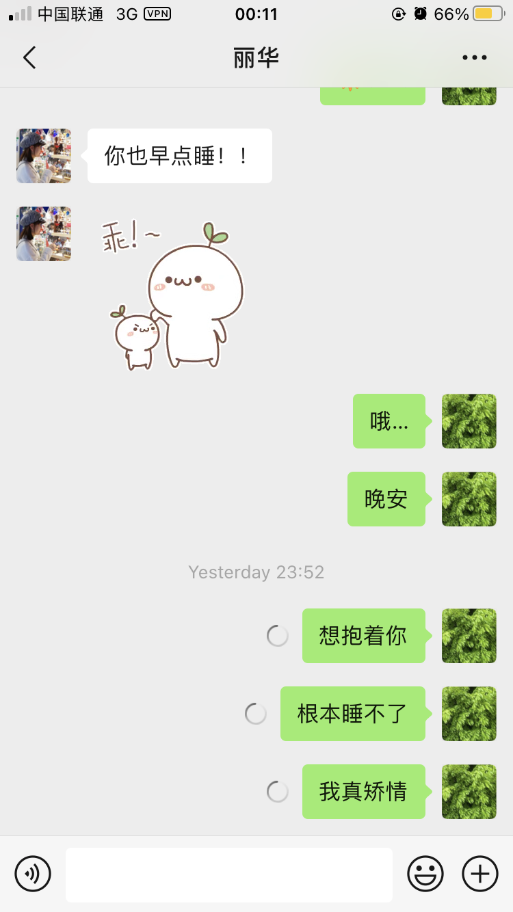

朝顔
如果你想说，那我就在听．
Sunshine
先去想做成这件事，再去想怎样只睡4小时的觉做成这件事．只想怎样只睡4小时，做不成这件事，还可能浪费了其它几小时．
很想你的时候，容易又发疯……只想一直在你身边，就想呆在你身边．虽然这样不是理想的．
宁静，这里只有片刻．抱紧你，很紧很紧的，针缝也不能留有，才敢长舒一口气．
走在马路上，是很热，但没有感受到阳光的温暖．一路上都在修路，到处是尘土．走着走着，也不知走了去哪，去了芳村立交好像．调头．感觉另一边才是你的方向．很热，但没有出汗．大街很吵．我很不喜欢吵杂的地方．但是这样没有思想地像只游魂野鬼地走着，吵不吵又好像没什么所谓．人来人往，都是过客；形形色色，这就是他们生活的样子吗？上一次这么的走，大概是在你的楼下．就这么地走，不是总能到达吗？
我知道需要用东西来填充它．我也有．但真的有用吗？去它的命．再弱小，也有资格不去承认这叫命运．再脆弱，也不应该为所有所谓的预设所束缚．应该把时间浪费得更有意义一些．
每次看到你小手起舞的样子，心都化了．
忙，也忘．
好不了．
累人累物．每当这么想的时候，就会觉得作．作多了，下场都一样．
尽管来来去去都是不知所云，但总要打开看着，才会有片刻的宁静．
天气好的时候总会时时想起去水库那边爬山的情景．那件蓝色外套，好土．但是穿在她的身上就特别好看．她也喜欢那件外套．我也喜欢看着她这么穿．这种天气，总会想和她去走走．尽管只是我所想，以及她也不是很喜欢这么晒的日子．

梦见你发了一条朋友圈说，那个患者的情况不太好．最后回复众人说，他最后还好．
梦见你微信ID改成了convnard，不知道是什么．
梦见你在住的地方对面买了一个真功夫的外卖，然而和一个男的一同不知道道去哪了．我进去买了一个82块的套餐，出来放上自行车的时候打翻了．踩着车经过奶茶店，看见你和他在奶茶店里自习，坐在墙角的位置．
梦见和你发信息的时候，“什么”两个字总是打不出来．打了很多次，都变成了其它的词．
梦见一个男的把阳台上的网撬了，不过什么也没拿．拿起剑追了出去，发现正爬在对面握手楼上，一剑向他捅了过去．被剑一推，他掉下去了．没死．
最后还是受不了，起来吃了一颗感冒药充数．
别太晚回去了，很想你．
才刚恢复，就吃火锅海鲜，会不会不太好．但愿安好．
这反复无常的天气，像极了这日子．以为可以不用穿外套，结果还是有点冷，好在还没洗了收起来．
在路上想起你说：不想写代码，也怕会让别人觉得经常去按摩什么，还有别人会觉得肚子上的肉肉“很多很多”……然后，默默相信你能会不再介怀别人的想法，也能不再去迎合别人．
看着你发的视频，感觉不去当主播都浪费了．想起了自己每次在台上的时候，姿态都不怎么样，每次都被人说．大概本身自己平时说话的时候也就那样吧，没有什么仪表可言．那么正经乖巧的你，确实比较少见．
再一想，大概是当了主播才是真正的浪费．
听到你说跳操，心里美滋滋．想早日看到健健康康的你．喉咙，好点了吧？当然了，炸鸡宵夜还是不能吃的．
不知道什么时候开始，变得讨厌喝酒．以前的话，是不喜欢，现在却变成了讨厌．
无意看到桌子上的那包糖，过期了．
半夜，梦见你拿了3张地图给我，然后我说不行！后面，就不记得了．
总是感觉自己没帮上忙．
有所谓，不能算．
从打败这残缺不堪的躯体开始．
想想憔悴的样子就心疼，还管它邋遢不邋遢．
要好好的．一堆好吃的在等着你．
我也想是你的哭诉对象．
心疼．
有些人选择是因为他没有得选择；有些人做选择是因为他可以选择．
有过那么些瞬间我会怀疑不是想做就可以做成的，例如所谓负责任．但实际上对于大部分人来说，能不能做成最终取决于他可不可以做，以及想不想做．我相信她可以，是因为前者她可以选，后者她也是有心人．
她是胸口前的一块肉，它痛了，我知道我要在．至于care不care，有没有所谓，那是另外一件事，也是后面的事．
讨厌又发疯的我．
有时我觉得这个世界有点有趣，想拥抱最真挚和单纯的笑容，得先拥有足够的财力……
努力赚钱！
今天无意中听到“抱大腿”几个字，想起了上次外甥用独特的语调抱大腿的时候被我录了下来，然后想起了她的小脚丫．虽然我没抱过她的大腿，而她也对着她的脚脚说大胖腿，但我一点都不觉得胖．只会想起她伸得直直的脚丫，然后想抱着她，像外甥那样．
想起每次你回去的时候，都会叽叽喳喳地和我说去了哪去了哪，特别喜欢你那样子．
明天要开车的话，别太晚睡．M.Y.
我知道，我最近都没有真正和她好好说过话．希望这不要为她带来额外的约束和负担．
我时常会想起每次“大吵”完之后的话，我没有不承认，只是一直我自己都没有做好．
起来的时候有点闷热，起来坐定以后才发现，不知不觉原来已经4月了．
这两年给我的感受就是，春天快要结束的时候，那段梅雨的日子变得越来越知．以前真的讨厌潮潮湿湿，地上湿的，墙是湿的，衣服也是湿的，走在大街上在，也是灰蒙蒙的一片，皮肤也无法呼吸．这两年，这样的日子几乎变得只剩下一周的时间．这样，我竟然还有点怀念起湿漉漉的日子．
去年，回来我们还“吵了一架”呢．只记得那天晚上回来，雨刚停了．但没有今天那么闷．
3月，呆在一起的时间觉得过得很快，自己呆在一边的时候觉得日子过得很慢．细心想下，我的确是个没什么变化的人．我知道我离随心还很远很远，远到遥不可及，但我想至少每天都离它近一些．正如我不喜欢996，但乐于为喜欢的工作奋斗到深夜，或者天亮．只是现在，需要骗自己：你要996．这次，你要做好一点！
虽然和我不一样，但我知道，她也可以；而她的纯真的笑容，就是一直以来她所得最好的见证．只需要减少焦虑，加油，她就可以．
靖康耻，犹未雪．
用夜深人静来压制焦躁的情绪．
匆匆．